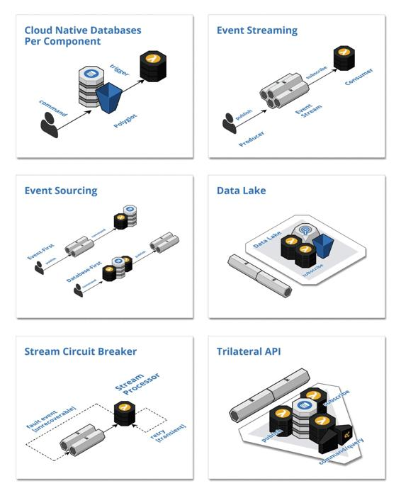

Foundation patterns
These patterns provide the foundation for reactive, asynchronous inter-component communication in cloud-native systems.

Cloud Native Databases Per Component: Leverage one or more fully managed cloud-native databases that are not shared across components and react to emitted events to trigger intra-component processing logic
Event Streaming: Leverage a fully managed streaming service to implement all inter-component communication asynchronously whereby upstream components delegate processing to downstream components by publishing domain events that are consumed downstream
Event Sourcing: Communicate and persist the change in state of domain entities as a series of atomically produced immutable domain events, using Event-First or Database-First techniques, to drive asynchronous inter-component communication and facilitate event processing logic
Data Lake: Collect, store, and index all events in their raw format in perpetuity with complete fidelity and high durability to support auditing, replay, and analytics
Stream Circuit Breaker: Control the flow of events in stream processors so that failures do not inappropriately disrupt throughput, by delegating the handling of unrecoverable errors through fault events
Trilateral API: Publish multiple interfaces for each component: a synchronous API for processing commands and queries, an asynchronous API for publishing events as the state of the component changes, and/or an asynchronous API for consuming the events emitted by other components